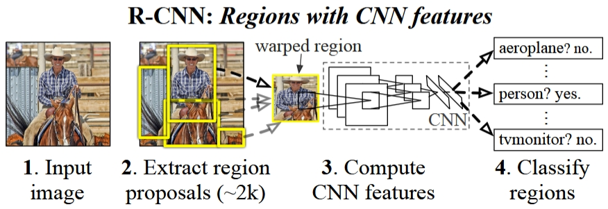
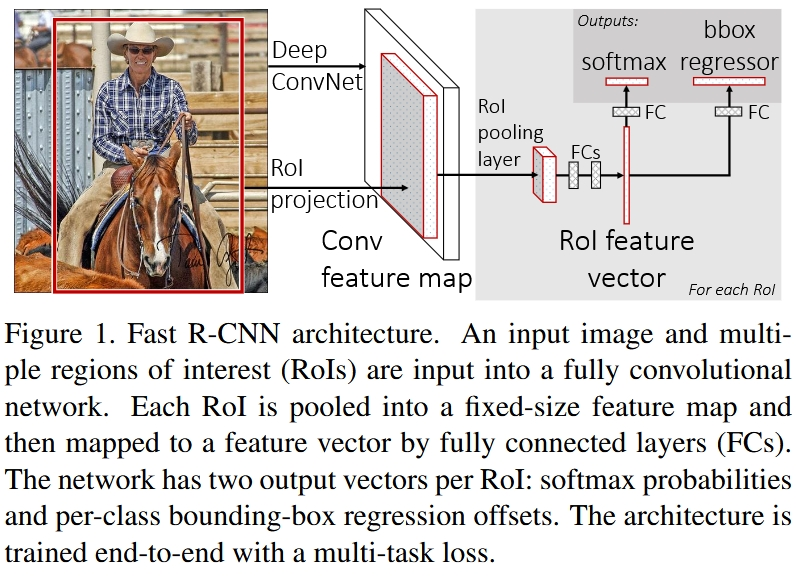
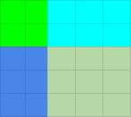
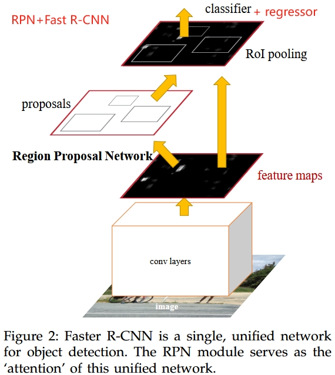
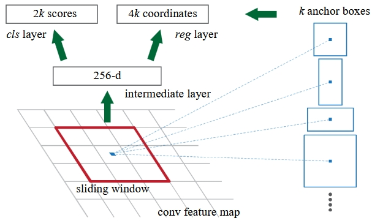
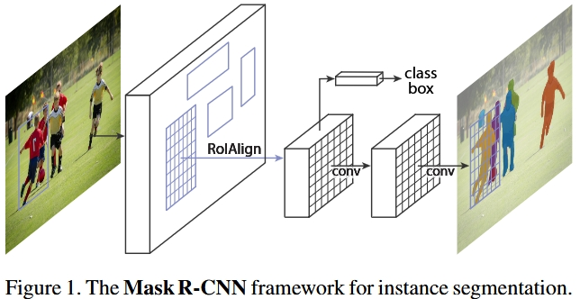
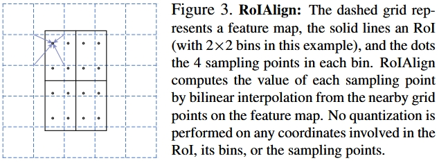
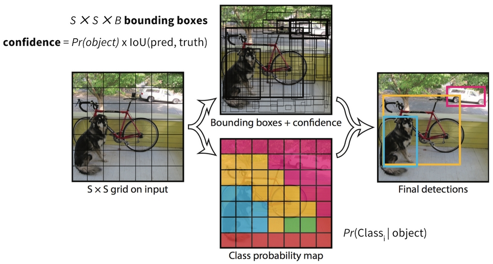
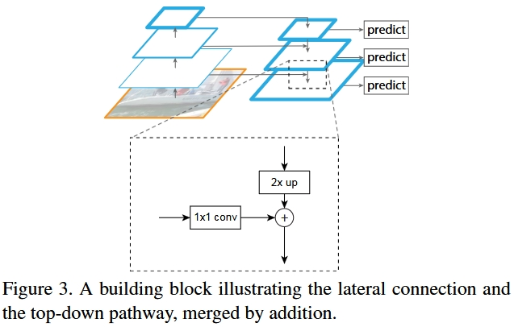
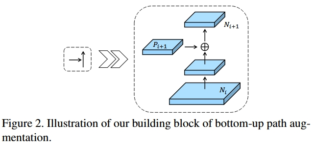

R-CNN
Traditional Convolutional Neural Networks (CNNs) with fully connected layers often struggle with object detection tasks, especially when dealing with multiple objects of various sizes and positions within an image. A brute-force method like applying a Sliding Window (Exhaustive Search) across the image to detect objects is highly computationally expensive, as it fails to scale efficiently when object frequency and variation increase.
Regions with CNN features (R-CNN) [1] was introduced in 2014 to overcome these challenges. R-CNN presents an approach by using a Selective Search algorithm to generate around 2,000 region proposals from an image. These proposals are likely to contain objects and are individually processed to detect and localize objects. R-CNN marked a significant advancement in the field of object detection and laid the foundation for faster and more accurate object detection models.

R-CNN multi-stage pipeline [1]
- roughly 2,000 regions for each image proposed by selectvie search algorithm, other following steps are all based on regions
- label these regions by IoU values with ground truth, some of them get ground truth, pile of them are background, some of them are confusing and thrown away (IoU between 0.3 to 0.5)
- resize (warp) these labeled regions and use them to fine-tune a pre-trained CNN model (N+1 classes, small learning rate, oversampling positive cases in each batch due to large number of background)
- feature extraction with the final CNN model
- train binary SVMs for each class based on feature vectors of regions, the outputs of SVM classifier is treated as confidence scores
- train bounding box regressor for each class
Bounding Box Regressor
Selective search algorithm gives us a very coarse bounding box, say $g_x,g_y,g_w,g_h$. To make it more accurate, R-CNN trains seperate bounding box regressor for each class. This regressor predicts 4 correction values, $\overline{t_x}, \overline{t_y}, \overline{t_w}, \overline{t_h}$. With them, we could get predicted bounding box by scale-invariant transformation (the math works perfectly no matter how big or small the object is):
$$\begin{aligned} \overline g_x &= g_x + g_x \cdot \overline{t_x} \\ \overline g_y &= g_y + g_y \cdot \overline{t_y} \\ \overline g_w &= g_w \cdot e^{\overline{t_w}} \\ \overline g_h &= g_h \cdot e^{\overline{t_h}} \\ (t_x,t_y,t_w,t_h &\in [-\infty,+\infty]) \end{aligned}$$
Ground true bounding box is represented by $G_x, G_y, G_w, G_h$. Therefore, the ground true 4 correction values are calculated:
$$\begin{aligned} t_x &= (G_x-g_x)/g_x \\ t_y &= (G_y-g_y)/g_y \\ t_w &= \ln{(G_w/g_w)} \\ t_h &= \ln{(G_h/g_h)} \end{aligned}$$
Loss function is Sum of Squared Error (SSE) with L2 regularization:
$$L_{reg}=\sum\limits_{i\in\{x,y,w,h\}}(t_i-\overline{t_i})^2 + \lambda ||w^2||$$
Each region gets N+1 confidence scores and N distinct adjusted bounding boxes.
Non-Maximum Suppression (NMS)
When an object is detected multiple times with different bounding boxes, NMS keeps the best one and removes the rest. This helps us to make sure each object is counted only once, improving the accuracy and clarity of the results. NMS is running per class, and it is designed for detecting multiple objects in the same class.
The while process:
- filter confidence scores, discard predictions whose confidence scores are below a baseline threshold (e.g. score < 0.05)
- split predictions by class
- run NMS per class
- combine results
NMS algorithm:
- sort by confidence socre
- pick the highest one as a confirmed predition
- compute IoU between the highest one in step 2 and the rest bounding boxes, suppress those IoU exceed a pre-defined NMS threshold, typically around 0.3 to 0.5, which means they are highly overlapping predictions for the exact same object
- move to the next highest-score box and repeat step 1
Issues of R-CNN
- slow and inefficient, not suitable for real-time application
- massive storage footprint
- complex multi-stage pipeline for training
- fixed region propasals by a hand-crafted algorithm
Fast R-CNN
The original R-CNN was revolutionary for its accuracy, but it was painfully slow and inefficient. Fast R-CNN [2] completely re-engineered the pipeline, making both training and inference much faster.

End-to-End Fast R-CNN [2]
Region of Interest (RoI)
Fast R-CNN still employed selective search algorithm to propose regions. Instead of taking each region as input, which would run CNN so many times, Fast R-CNN takes the original image as input, and compute the mapping of each region on the final feature map. These mappings are called RoI. Both region and RoI are represented by coordination $(x,y,w,h)$. Spatial stride is the factor by which the original images are downsampled to final feature map. Fast R-CNN employed pre-trained CNN as well.
$$\text{RoI}=\cfrac{\text{region}}{\text{spatial stride}}$$
RoI Pooling Layer (RoIPool)
The purpose of RoI pooling layer is to map RoI of various sizes into a fixed target size so that the following FC layers can handle. Suppose $w\times h$ is the size of RoI, and $W\times H$ is the target size (typically $7\times 7$). The mapping is simply done by
$$\text{sub-cell width}:\overline w=\cfrac{w}{W}$$
$$\text{sub-cell height}:\overline h=\cfrac{h}{H}$$
and floor $\left\lfloor.\right\rfloor$ and ceiling $\left\lceil.\right\rceil$ rounding tricks.

E.g. 5x5 RoI to 2x2 target
Then, for each sub-cell, a standard max pooling operation is applied.
When the size of RoI is smaller than the size of target, pixel replication or zero padding are used. This is a primary reason why original Fast R-CNN struggled heavily with detecting small objects. The features for small RoI become blurred, duplicated, and uninformative. (solve this issue in Mask R-CNN with RoIAlign)
Two Outputs
- softmax for classification, N+1 classes
- per-class bounding box regressor, N classes, $\overline{t^n}=(\overline{t_x^n},\overline{t_y^n},\overline{t_w^n},\overline{t_h^n})$
Both outputs follows a single FC layer, which has an issue of conflict interest. Classification perfers FC layer, however, regressor prefers Conv layer which preserve spatial information. (solve this issue in Double-Head R-CNN)
Multi-task Loss
$u$ is the true class label, and $u\in [0,1,2,…,n]$. When $u=0$, it’s catch-all background class, no ground truth bounding box.
$$L=L_{cls}+\lambda\cdot I[u\ge 1]\cdot L_{box}$$
$L_{cls}$ is a standard classification loss. $\lambda=1$ in original paper.
$$I[u\ge 1] =\begin{cases} 1, & \text{if u >= 1} \\ 0, & \text{otherwise} \end{cases}$$
$L_{box}$ is a smooth L1 loss, which is robust and less sensitive to outliers than L2 loss used in R-CNN.
$$L_{box}=\sum\limits_{i\in\{x,y,w,h\}}\text{smooth}_{L1}(t_i-\overline{t_i})$$
$$\text{smooth}_{L1}(x) =\begin{cases} 0.5\cdot x^2, & \text{if } |x| \lt 1 \\ |x|-0.5, & \text{otherwise} \end{cases}$$
While training, $L_{box}$ only computes the loss of ground truth class, and ignore all other predictions.
Hierarchical Mini-batch Sampling
During training, Fast R-CNN optimizes how data is loaded into memory. Instead of picking random RoIs from different images, it groups them by image.
- The Setup: A typical mini-batch size is $S = 2$ images.
- The RoI Pool: From each image, $R = 64$ RoIs were sampled, giving a total mini-batch size of $128$ RoIs.
- The Ratio: Out of the 64 RoIs per image, about 25% (16 RoIs) are chosen from region proposals that have an IoU $\ge 0.5$. These are the foreground (positive) examples. The remaining 75% are background (negative) examples.
End-to-End Training
During the backward pass, gradients are computed for all RoIs in a batch simultaneously. When the gradients travel backward through the FC layers, they eventually converge at the RoI Pooling Layer. Here, the gradients from all separate RoIs are accumulated and summed up for each pixel they utilized on the shared feature map. Once the gradients are accumulated on the feature map, backpropagation continues normally through the base convolutional network. This allows the shared convolutional weights to be optimized based on the feedback of all 128 RoIs at once.
Gradient is also a tensor, which has the same shape of weights of feature map.
Faster R-CNN
Both R-CNN and Fast R-CNN employ selective search algorithm to propose regions. This hand-crafted algorithm becomes a bottleneck for real-time application. Faster R-CNN [3] introduces Region Proposal Network (RPN) to replace this algorithm.

Faster R-CNN with RPN [3]
Structure of RPN
RPN is a mini-network working as a sliding window on shared feature map. It’s only purpose is to propose regions to Fast R-CNN. Structure of RPN is simple:
Shared Feature Map (from Backbone)
│
▼
3x3 Conv Layer (padding 1)
│
├─► 1x1 Conv (Cls Head) ─► Output: 2k channels for objectness scores per pixel
│
└─► 1x1 Conv (Reg Head) ─► Output: 4k channels for coordinates per pixel
$K$ is the number of anchors, typically $k=9$. RPN is a fully convolutional network, no fully connected layer.

RPN [3]
One critical detail is that the coordinates predictions are for original input size, not for the size of feature map.
Anchors and Proposed Regions
Anchors are fixed rectangles centered at each pixel. RPN predicts objectness score and 4 correction values for each anchor. Typically in original paper, each pixel has 9 anchors, and they are defined by 3 scales, $128^2, 256^2, 512^2$, and 3 aspect ratios, $1:1, 1:2, 2:1$. Anchors are not the proposed regions. Proposed regions are computed based on anchors and RPN’s outputs and filter by NMS and top N selection. Typically, $N=2000$ for training, and $N=300$ for testing.
Faster R-CNN performs bounding box regression twice! RPN does the first regression based on fixed anchors, which served as region proposals for RPN. Regression is a correction of region proposal. (region-based object detection)
4-Step Alternating Training
- use a pre-trained CNN model to train RPN
- use a pre-trained CNN model and RPN to train a Fast R-CNN
- use the Fast R-CNN to train a new RPN, fix feature map, only fine-tune RPN
- fixed feature map and RPN, only fine-tune Fast R-CNN
Approximate Joint Training
Following the development of the 4-Step Alternating Training method, researchers looked for a way to make training Faster R-CNN more elegant and less time-consuming. This led to Approximate Joint Training, in which the network just calculates two sets of losses simultaneously: the RPN loss and the Fast R-CNN loss. No steps and layers freeze.
Why is it approximate? In backward, the gradient should pass from Fast R-CNN detector back to RPN. However, the network takes the output of RPN fixed due to some complicated math. RPN learns by its own loss.
Mask R-CNN
Mask R-CNN [4], extends Faster R-CNN [3] by adding a branch for predicting segmentation masks for each Region of Interest (RoI), in parallel with the existing branch for classification and bounding box regression. The mask branch is a small FCN applied to each RoI, predicting segmentation masks for each class in a pixel-to-pixel manner. Mask R-CNN is doing instance segmentation.

Mask R-CNN with three prediction branches: class, box, segmentation [4]
RoIAlign
The Problem with RoIPool in Faster R-CNN is Quantization!
RoIPool relies on forcing continuous geometric coordinates into strict integer pixel values. This happens in two separate steps, causing double quantization.
- Image to Feature Map Mapping: If an object in the original image has a bounding box of $290 \times 290$ pixels, and your backbone network has a stride of 16, the box size on the feature map becomes $290 / 16 = 18.125$. RoIPool rounds this down to 18 pixels ($\lfloor 18.125 \rfloor$).
- Dividing into Bins: If your target output size is $7 \times 7$, you divide that 18-pixel box into 7 bins. $18 / 7 = 2.57$ pixels per bin. RoIPool rounds this again, making some bins 2 pixels wide and others 3 pixels wide.
Because of roundings, the features extracted by RoIPool are physically misaligned from the actual object in the original image. The spatial shift can be anywhere from a few pixels to over a dozen pixels. While a classification head doesn’t care if a car’s features are shifted by 5 pixels, a mask generation head will draw the edge of the car completely in the wrong place.
RoIAlign completely removes integer rounding. It preserves the exact, floating-point geometry of the region proposal throughout the entire process. Instead of rounding, it uses Bilinear Interpolation to calculate what the feature values would be at exact fractional coordinates.

RoIAlign [4]
With RoIAlign, the accuracy predictions of bounding boxes are increased as well!
Loss Function
$$L=L_{cls}+L_{box}+L_{mask},$$
where $L_{cls}$ and $L_{box}$ are the same as Faster R-CNN.
The mask branch predicts N masks for each class, like bounding box predictions, in $m \times m$ size ($28\times 28$, fixed and not the same size as in the original input). To this a per-pixel sigmoid is applied, and define $L_{mask}$ as the average binary cross-entropy loss. For an RoI associated with ground-truth class k, $L_{mask}$ is only defined on the k-th mask (other mask outputs do not contribute to the loss).
$$L_{mask}=-\cfrac{1}{m^2}\sum\limits_{1\le i,j \le m}\left(y_{ij}\cdot\log{\overline{y_{ij}^k}}+(1-y_{ij})\cdot\log{(1-\overline{y_{ij}^k}})\right)$$
Two-stage Object Detection: R-CNN Family
R-CNN family is also called region-based object detection models because the final predictions are all based on proposed regions generated by selective search algorithm or RPN network. Therefore, people say this is two-stage object detection, from input image to regions, and then from regions to final classes, boxes and masks.
The other approach skips the region proposal stage and runs object detection directly. This is how one-stage object detection algorithm works.
YOLO (You Only Look Once)
The key to understand YOLOv1 [5] is its big tensor output. Images go through a pre-trained CNN and predict a big tensor following a few FC layers, which offer global context. YOLO treats object detection as a regression task with raw output (linear activation function for output layer).
$$\text{output}=S\times S\times(5B+N)$$
- Pre-trained CNN was trained on 224x224 input. YOLOv1 adopted it to receive 448x448 input by adding a few more conv layers. Train object detection and large resolution at the same time.
- Image is split into $S\times S$ cells. (e.g. $7\times 7$)
- Each cell is responsible for detecting objects whose center falls into it.
- Each cell predicts $B$ bounding boxes. (e.g. $B=2$. Predicting only one bounding box per cell would limit the model. It couldn’t easily handle objects of very different shapes, such as tall or thin like people or wide like cars.)
This leads to specialization between the bounding box predictors. Each predictor gets better at predicting certain sizes, aspect ratios, or classes of object, improving overall recall.
- Each bounding box is represented by $(x,y,w,h)$. $(x,y)$ is the center of bounding box, which is relative to the cell. $(w,h)$ is relative to the image. Therefore, ground truths of these 4 values are all between 0 and 1.
- Each bounding box has a confidence score. While training, ground truth is defined as $P(object)\times IoU$. When there is an object, $P(object)=1$, otherwise $P(object)=0$. The model predicts a confidence value, which is also called objectness score.
The confidence score is changing (moving target) while training! If the target was always a fixed 1.0, the network would be forced to be wildly overconfident even if the box was totally misaligned.
- The bounding box with highest IoU is responsible for predciting object. (responsible bounding box)
- Each cell predicts a conditional probability for each object classes. That’s the $N$.

YOLO V1 [5]
Since each cell only predicts one object, YOLOv1 is struggling with dense object prediction.
Loss Function
All loss components are Sum of Squared Error (SSE):
$$L=L_{box}+L_{conf}+L_{cls}$$
$$L_{box}=\lambda_{box}\cdot \sum\limits_{i=1}^{S^2}\sum\limits_{j=1}^{B}I_{ij}^{obj}\left[(x_{ij}-\overline x_{ij})^2+(y_{ij}-\overline y_{ij})^2+(\sqrt{w_{ij}}-\sqrt{\overline w_{ij}})^2+(\sqrt{h_{ij}}-\sqrt{\overline h_{ij}})^2\right]$$
$$L_{conf}=\sum\limits_{i=1}^{S^2}\sum\limits_{j=1}^{B}I_{ij}^{obj}(C_{ij}-\overline C_{ij})^2+\lambda_{noobj}\cdot\sum\limits_{i=1}^{S^2}\sum\limits_{j=1}^{B}I_{ij}^{noobj}(C_{ij}-\overline C_{ij})^2$$
$$L_{cls}=\sum\limits_{i=1}^{S^2}\sum\limits_{c\in C}I_{i}^{obj}\bigg(p_i(c)-\overline p_i(c)\bigg)^2$$
$I$ is indicator function. $L_{box}$ only penalizes responsible bounding box by $I_{ij}^{obj}$. In paper, $\lambda_{box}=5, \lambda_{noobj}=0.5$. Increase the loss from bounding box coordinate predictions and decrease the loss from confidence predictions for boxes that don’t contain objects.
Why square roots ($\sqrt{w}, \sqrt{h}$)? The authors used square roots because a small error in a large box (like a bus) matters much less than the same small error in a small box (like a teacup). Taking the square root reflects this, penalizing size errors in small boxes more heavily.
YOLOv2
YOLO suffers from a variety of shortcomings relative to state-of-the-art detection systems. Error analysis of YOLO compared to Fast R-CNN shows that YOLO makes a significant number of localization errors. Furthermore, YOLO has relatively low recall compared to region proposal-based methods. Thus we focus mainly on improving recall and localization while maintaining classification accuracy. [6]
Improvements:
- BatchNorm.
- High Resolution Classifier. Fine tune the pre-trained classification network at the full 448×448 resolution for 10 epochs on ImageNet. This high resolution classification network gives us an increase of almost 4% mAP.
- Fully Convolutional Network with 416x416 input. YOLOv2 removes the final fully connected layers and becomes a fully convolutional network, which is mathematically flexible and can accept different input sizes quite easily.
- YOLOv2 downsamples images by a factor of 32. This creates a final grid feature map of 13x13. Because 13 is an odd number, the grid has a single, definitive center cell.
Objects, especially large objects, tend to occupy the center of the image so it’s good to have a single location right at the center to predict these objects instead of four locations that are all nearby.
- YOLOv2 adopts to anchor boxes. The model predicts correction values (adjustments) of each anchor box, like RPN in Faster R-CNN. $B=5$ is the number of anchor boxes used in YOLOv2. But, $N$ is shared by these 5 boxes as well. In YOLOv2, each of the 13×13 grid cells is assigned 5 different anchor boxes of varying aspect ratios and scales. When an object center lands in a grid cell, the network chooses the anchor box that matches the object’s shape the closest and calculates minor offsets to fit it.
- Bounded Prediction. In R-CNN, the 4 correction values are unbounded, which could introduce instability while training. YOLOv2 applies a sigmoid operation to get the bounded center and confidence prediction. $c_x,c_y$ are the top left corner of each cell. $p_w,p_h$ are the prior width and height of anchor boxes.
$$\begin{aligned} b_x &=\sigma(t_x) + c_x \\ b_y &=\sigma(t_y) + c_y \\ b_w &=p_w\cdot e^{t_w} \\ b_h &=p_h\cdot e^{t_h} \\ P(object)\cdot \text{IoU} &= \sigma(t_o) \end{aligned}$$
- In Faster R-CNN, the anchor box dimensions were chosen manually. In YOLOv2, they ran a K-Means Clustering algorithm on their entire training dataset’s ground-truth bounding boxes to discover the 5 most common bounding box shapes. In this case, centroids are bounding boxes themselves but only have $(w,h)$. The key point is that the positions don’t matter, and we only care the shapes of bounding box, do not care where are they while running k-mean. Imagine all boxes are stack together with top left $0,0$. Clustering happens on the 3rd axis. Therefore, the distance is defined as below.
$$dist(box,centroid)=1-IoU(box,centroid)$$
- Fine-Grained Features by Passthrough Layer. Localization information is lost gradually as CNN goes deeper and resolution becomes smaller. 13x13 grid is good for large objects. For small ones, YOLOv2 has a passthrough layer. It’s like channel concatenation, but the feature map is double folded. Somewhere in the network, 512x26x26 is reshaped to 2048x13x13 and concatenate.
- Multi-Scale Training. Because YOLOv2 is a fully convolutional network, it can accept any image size as long as the dimensions are multiples of 32 (since the backbone downsamples the image by a factor of 32). Typically sizes are ranging from 320×320 up to 608×608. During training, YOLOv2 implements a simple rule: Every 10 batches, the network randomly selects a new image dimension. The catch is that different input has different final output grid size. It doesn’t really matter. By choosing different input size, YOLOv2 model could run with different accuracy and speed.
- $L_{box}$ becomes standard SSE/MSE, no square root trick.
YOLOv3
Improvements of YOLOv3 [7]:
- Updated Base Classifier. Heavily utilize skip connection from ResNet. Deeper network. Replace max pooling with stride 2 convolution. Inspired and Leverage Feature Pyramid Network (FPN) [8], but modified.
- Multi-Scale Predictions. By utilizing modified FPN, YOLOv3 outputs predictions at 3 different scales. For standard input size 416x416, they are 13x13 (large), 26x26 (medium), and 52x52 (small).
- Per-Box Classification. In YOLO and YOLOv2, the model predicts the object class for each grid (shared $N$). But, in YOLOv3, the model predicts class for each bounding box. The model predicts $3$ bounding boxes (prior anchors are computed by k-mean algorithm the same as YOLOv2). For each grid, there are coordinations, objectness score and class predictions. The output tensor becomes $S \times S \times (3 \times (5 + N))$.
- 3 boxes for each grid, and 3 prediction scales. There are total 10,647 boxes predicted for standard input size.
Feature Pyramid Network (FPN)

FPN Building Block [8]
Similar to U-Net, which employs channel concatenation instead. FPN utilizes 1x1 conv and addition. However, YOLOv3 didn’t employ addition. It utilizes channel concatenation. Therefore, it’s more like U-Net and DenseNet, feature reuse!
-
Independent Logistic Regression for supporting Multi-Label Classification.
-
Logistic Regression for Confidencee Score. The ground truth is fixed while training. YOLOv3 completely unlinked the confidence target from the accuracy of the predicted coordinates.
-
BCE loss for logistic regression (confidence and classification).
-
Multi-Scale Training is still there, which makes YOLOv3 even more robust!
-
modified Spatial Pyramid Pooling (SPP): SPP block is inserted just before the first 13x13 output layer. Instead of passing the feature map through a single path, SPP splits the feature map into four parallel paths:
(1). Path 1 (identity): The original feature map passes through completely untouched. (2). Path 2 (5×5 max pooling with padding 2): Captures small, localized features. (3). Path 3 (9×9 max pooling with padding 4): Captures medium-scale contextual features. (4). Path 4 (13×13 max pooling with padding 6): Captures large-scale, near-global features.
All four paths output the same 13x13 size, and then concatenated together. On the MS COCO dataset, adding the SPP block increased YOLOv3’s Object Detection AP (Average Precision) by nearly 3% to 4%.
The original SPP was designed for fixed length FC layers. Convolutional network can take any input size. SPP is in between the convolutional part and final FC layers. It divides the final feature maps into fixed number of bins with max pooling operation of dynamic pooling size, such as 1x1 bin, 2x2 bins, and 4x4 bins. No matter how big or small the original image was, the outputs of these grids are flattened and concatenated into a completely fixed-length vector (1+4+16=21 values per channel) to pass safely into the Fully Connected layer.
YOLOv4
There are a huge number of features which are said to improve Convolutional Neural Network (CNN) accuracy. Practical testing of combinations of such features on large datasets, and theoretical justification of the result, is required. Some features operate on certain models exclusively and for certain problems exclusively, or only for small-scale datasets; while some features, such as batch-normalization and residual-connections, are applicable to the majority of models, tasks, and datasets.
Improvements in YOLOv4 [9]:
- Stem –> Backbone –> Neck –> Head. Neck component, such as SPP, is explicitly stated in YOLOv4. Sometimes, people put stem into backbone. Backbone is usually pre-trained. Neck and head is called Detector.
- Bag of Freebies, such as Data Augmentation and Loss Functions.
Usually, a conventional object detector is trained off-line. Therefore, researchers always like to take this advantage and develop better training methods which can make the object detector receive better accuracy without increasing the inference cost. We call these methods that only change the training strategy or only increase the training cost as “bag of freebies.”
- Mosaic Data Augmentation. This is YOLOv4’s flagship augmentation trick. It takes four different training images and crops, scales, and stitches them together into a single training image layout. This introduces a massive amount of contextual variety and exposes the model to many small objects simultaneously. It also allows you to effectively train with a large batch size on just a single consumer GPU, because a single pass of a Mosaic image is equivalent to looking at 4 different images.
- CutMix Data Augmentation.
- Self-Adversarial Training (SAT). It represents a new data augmentation technique that operates in 2 forward backward stages. In the 1st stage the neural network alters the original image instead of the network weights. In this way the neural network executes an adversarial attack on itself, altering the original image to create the deception that there is no desired object on the image. In the 2nd stage, the neural network is trained to detect an object on this modified image in the normal way.
In the first backward stage, weights are fixed. It takes input as trainable parameters. Instead of reducing loss, the updating is to increase the loss. The math is below.
$$x_{adv}=\text{clip}_{\epsilon}\big(x+\alpha\cdot\text{sign}(\nabla x)\big)$$
The $\text{sign}$ function. It strips away the magnitude of the gradient and leaves only the direction. If a gradient is positive, it becomes +1. If it’s negative, it becomes −1. This prevents a few hyper-sensitive pixels from dominating the changes. This is from Fast Gradient Sign Method (FGSM). $\alpha$ is an incredibly small multiplier. This ensures the pixel adjustments are tiny, often changing a pixel’s RGB value by just 1 or 2 steps out of 255. $+$ makes sure that the updating increase the loss. $\text{clip}_{\epsilon}$ is the clip function which make sure the absolute change of each pixel cannot be large the $\epsilon$.
training images –> photometric/geometric augmentation –> mosaic/cutmix –> sat
- Complete IoU (CIoU) Loss.
When a model predicts where an object is, it draws a box. We need a mathematical way to score how close that predicted box is to the actual ground truth box. The issue of IoU is that if the predicted box and the ground truth box do not overlap at all, the IoU is exactly 0. The gradient vanishes, and the model doesn’t know which direction to move the box to make it closer. CIoU argues that a perfect bounding box loss needs to look at three geometric factors simultaneously:
(1). Overlap Area (handled by IoU)
(2). Central Point Distance (handled by DIoU)
(3). Aspect Ratio (The specific shape, width vs. height)
(a). Generalized IoU (GIoU)
$$GIoU=IoU-\cfrac{C-(AUB)}{C}$$
Let $C$ be the smallest convex hull (or bounding box) that completely encloses both $A$ and $B$. GIoU tackles the issue when IoU is zero.
(b). Distance IoU (DIoU)
$$DIoU=IoU-\cfrac{\rho^2(b,b^{gt})}{c^2}$$
$b$ and $b^{gt}$ represent the central points of the predicted box and the ground truth box. $\rho(⋅)$ is the Euclidean distance. $c$ is the diagonal length of the smallest enclosing bounding box $C$.
DIoU takes GIoU a step further by directly minimizing the normalized distance between the central points of the two bounding boxes. GIoU tries to maximize the size of the bounding box to cover the ground truth and then shrink it. DIoU directly targets the distance between centers, which leads to much faster convergence. When one box is completely inside another, GIoU’s penalty term degrades to 0 (because the enclosing box equals the larger box). DIoU still functions perfectly because the center points are still distinct, allowing the network to continue optimizing the inner box’s position.
(c). Complete IoU (CIoU)
$$CIoU=DIoU-\alpha v$$
$$v=\cfrac{4}{\pi^2}\left(\arctan(\frac{w^{gt}}{h^{gt}})-\arctan(\frac{w}{h})\right)^2$$
The $\arctan$ function ensures that the aspect ratio comparison is scale-invariant. The factor $\cfrac{4}{\pi^2}$ normalizes the value to fall between 0 and 1.
$$\alpha=\cfrac{v}{(1-IoU)+v}$$
The balancing parameter $\alpha$ is a non-negative trade-off metric. It prioritizes the aspect ratio penalty only when there is an actual overlap between the boxes (giving higher priority to overlap first).
- Class Label Smoothing.
- DropBlock.
- Cross mini-Batch Normalization (CmBN).
Make BN works together with Gradient Accumulation. (The design of BN in PyTorch automatically support this.)
- Cosine Annealing Scheduler.
- Bag of Specials, such as SPP.
For those plugin modules and post-processing methods that only increase the inference cost by a small amount but can significantly improve the accuracy of object detection, we call them “bag of specials”.
- Mish Activation Function. Similar to SiLU.
- Cross-Stage Partial Network (CSPNet).
- Spatial Pyramid Pooling (SPP).
- Modified Path Aggregation Network (PANet).
Path Aggregation Network (PANet) [10] was created as a direct upgrade to the classic Feature Pyramid Network (FPN). Low level feature maps are also downsampled and merged into next level feature map by addition. However, in YOLOv4, concatenation is used as well. (Low level feature maps are utilized twice in PANet.)

PANet Bottom Up Path Augmentation [10]
- modified Spatial Attention Module (SAM), which is from CBAM. No avg and max pooling, directly apply 1x1 conv –> sigmoid –> multiplication.
YOLOv5
YOLOv5 was released a couple of months after YOLOv4 in 2020 by Glen Jocher, founder and CEO of Ultralytics. It was developed based on YOLOv3/YOLOv4 in PyTorch. An important thing to know about YOLOv5 is that there is no formal, peer-reviewed academic paper published by its creator for the original release. When Glenn Jocher released the repository in May 2020, it was treated as a living, open-source software product rather than an academic thesis.
- PyTorch, FP16 for training and inference
- five model sizes: n, s, m, l, x
- AutoAnchor: (1) Auto-tool for customized datasets; (2) Genetic Algorithm (GA) refines the results of k-mean
- Focus Layer. Just like passthrough layer in YOLOv2, it is applied at the beginning of backbone (stem). (In YOLOv5 v6.0+, it was replaced by a standard 6×6 Convolutional layer because it was more hardware-friendly and achieved the exact same mathematical result.)
- modified CSP bottleneck. channel split –> 1x1 conv bottleneck for both passes –> concatenation –> 1x1 conv to reqired channels (often referred to as the C3 module, CSP Bottlenecks with 3 Convolutions)
- Enhanced Mosaic Augmentation.
- 2x2 –> 3x3
- Genetic Algorithm for hyperparameter tuning. Over early training iterations, the framework mutates these augmentation parameters (like mosaic, mixup, scale, degrees) to find the exact mix that yields the highest validation score for your specific dataset.
- Label Clipping and Guardrails. Stitching images together randomly can result in a lot of broken bounding boxes. For example, if the stitch cut happens right through the middle of a cat, half the cat is gone, but the bounding box might still exist in empty space. YOLOv5’s enhanced pipeline automatically applies tight math guardrails: (a). It clips bounding box coordinates so they never extend outside the newly formed mosaic boundaries. (b). It filters out boxes that have become too small, distorted, or completely cut off by the mosaic seams, ensuring the network isn’t penalized or confused by garbage label data.
- The Fade-Out Strategy. Mosaic augmentation is incredibly chaotic. While it is amazing for the first 70%–80% of training to build robust, generalized features, teaching a network on chaotic, stitched images at the very end of training can prevent the model from stabilizing. In YOLOv5’s training ecosystem, Mosaic is often paired with a Deactivation/Fade-Out strategy in the final epochs (a concept heavily formalized in later versions like YOLOv8). The pipeline turns off mosaic augmentation for the last 10–20 epochs, switching back to clean, un-stitched images. This allows the model to fine-tune its bounding box boundaries on real-world distributions before training concludes.
- Mish –> SiLU
- modified PANet. Feature maps concatenate by C3 module.
- Weighted Objectness Loss.
In earlier YOLO versions, the objectness loss was treated equally across all scales. However, a massive issue arises because of how the math handles anchor boxes: the highest resolution grid 32x32 has a massive number of anchor boxes compared to the lowest resolution one 8x8. Because anchor boxes are associated with pixels. If you treat them equally, the tiny, background-heavy anchors overwhelm the loss function. Furthermore, small objects are inherently much harder for a network to confidently classify as objects compared to a massive, glaringly obvious large object.
$$L_{obj}=4.0\times L_{small} + 1.0\times L_{medium} + 0.4\times L_{large}$$
YOLOv5 didn’t stop at static weights. It also realized that if a user trains a model on 640×640 images versus 1280×1280 images, the number of anchor boxes changes drastically. To combat this, YOLOv5 dynamically adjusts these scale weights based on your input image size.
- SPPF (Spatial Pyramid Pooling - Fast).
Doing a 13×13 max pool on a high-channel tensor is computationally expensive and slow. SPPF fixes this by replacing the parallel structure with a serial (sequential) structure using only small 5×5 max pooling layers. Mathematically, passing a feature map through two consecutive 5×5 pools is equivalent to one 9×9 pool, and three consecutive 5×5 pools is equivalent to one 13×13 pool.
Input ──> MaxPool(5x5) [Y1] ──> MaxPool(5x5) [Y2] ──> MaxPool(5x5) [Y3]
Then, Concatenate(Input, Y1, Y2, Y3) ──> Output
Reference
- Girshick, R., Donahue, J., Darrell, T., & Malik, J. (2014). Rich feature hierarchies for accurate object detection and semantic segmentation. In Proceedings of the IEEE conference on computer vision and pattern recognition (pp. 580-587).
- Girshick, R. (2015). Fast r-cnn. In Proceedings of the IEEE international conference on computer vision (pp. 1440-1448).
- Ren, S., He, K., Girshick, R., & Sun, J. (2016). Faster R-CNN: Towards real-time object detection with region proposal networks. IEEE transactions on pattern analysis and machine intelligence, 39(6), 1137-1149.
- He, K., Gkioxari, G., Dollár, P., & Girshick, R. (2017). Mask r-cnn. In Proceedings of the IEEE international conference on computer vision (pp. 2961-2969).
- Redmon, J., Divvala, S., Girshick, R., & Farhadi, A. (2016). You only look once: Unified, real-time object detection. In Proceedings of the IEEE conference on computer vision and pattern recognition (pp. 779-788).
- Redmon, J., & Farhadi, A. (2017). YOLO9000: better, faster, stronger. In Proceedings of the IEEE conference on computer vision and pattern recognition (pp. 7263-7271).
- Redmon, J., & Farhadi, A. (2018). Yolov3: An incremental improvement. arXiv preprint arXiv:1804.02767.
- Lin, T. Y., Dollár, P., Girshick, R., He, K., Hariharan, B., & Belongie, S. (2017). Feature pyramid networks for object detection. In Proceedings of the IEEE conference on computer vision and pattern recognition (pp. 2117-2125).
- Bochkovskiy, A., Wang, C. Y., & Liao, H. Y. M. (2020). Yolov4: Optimal speed and accuracy of object detection. arXiv preprint arXiv:2004.10934.
- Liu, S., Qi, L., Qin, H., Shi, J., & Jia, J. (2018). Path aggregation network for instance segmentation. In Proceedings of the IEEE conference on computer vision and pattern recognition (pp. 8759-8768).